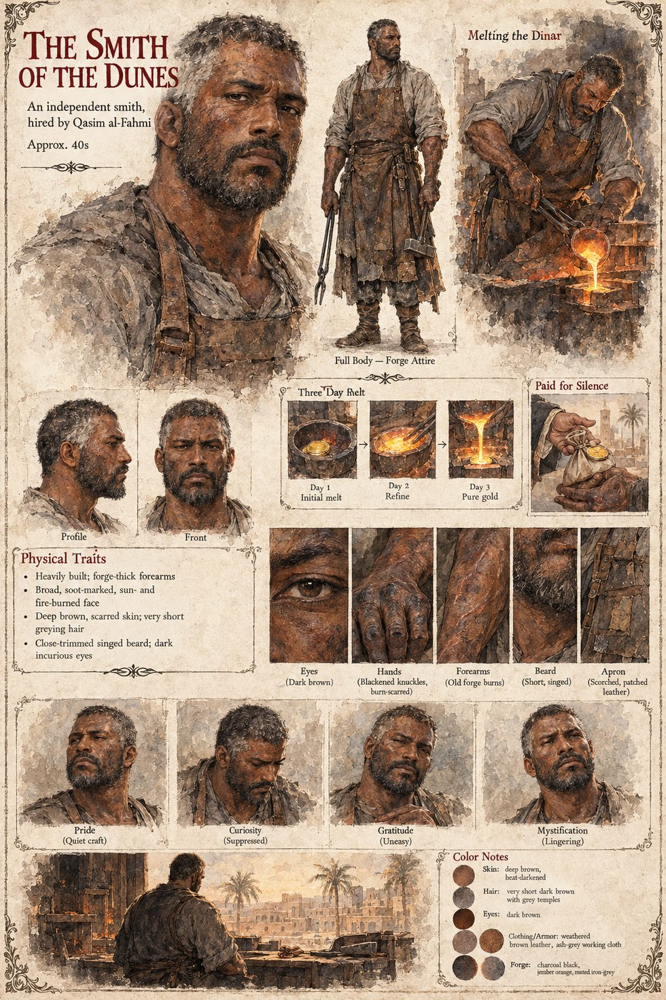

The Smith of the Dunes
Smith hired by Qasim al-Fahmi · unnamed · melts the dinar over three days · in his forties by the sheet
A smith whose forge Qasim pays for, and whom Qasim then swears to secrecy with a sum the smith will spend the rest of his life being grateful for and mystified by. In that forge, over three days, a dinar that survived a marriage, a murder, a war and a dead man's entire fortune in vice is reduced to a formless, ordinary puddle of gold that any coin-weigher in the world would have recognized as nothing more than what it had always, technically, been. The manuscript gives him no name, place, age or word of speech, does not say whether he or Qasim worked the metal, and does not say what he was told, what he guessed, or whether he ever tried to learn why a man would pay such a sum to unmake one coin.
The sheet gives him a body, a place and the work. It draws him heavily built, with forge-thick forearms, a broad, soot-marked, sun- and fire-burned face, deep brown scarred skin, very short greying hair, dark eyes and a close-trimmed singed beard, in a scorched, patched leather apron over ash-grey working cloth, with blackened, burn-scarred knuckles and old forge burns up the forearms. A three-part strip shows the melt as an initial melt on the first day, a refining on the second and pure gold on the third; another shows a hand passing a pouch, labeled Paid for Silence; a last shows him at his forge before a palm-ringed town of low roofs. His expression panels run pride (quiet craft), curiosity (suppressed), gratitude (uneasy) and mystification (lingering). The age band, the day-by-day melt, the town and the apron are the sheet's; the manuscript sets the forge in no town.